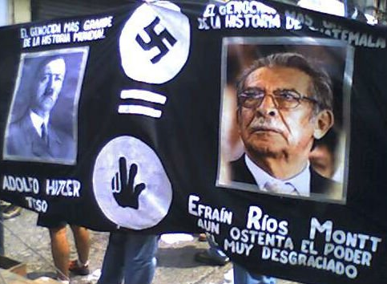

Since the end of the physical events of the Silent Holocaust, multiple documents have surfaced that indicated the nature of the acts of violence (both physical and social) that took place during these terrifying times.
Each item listed will be accompanied with a brief description of the contents that lie therein and a corresponding link to where these can be found. Since these documents are not content originating from this wite, and since the host websites have much more information than is currently on this site, it was decided that links to the sites containing the documents, rather than pdf versions of the documents themselves, should be available here.
